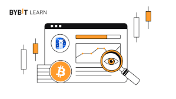

Swap DefiLlama 's Lego Bricks: Building Your Next DeFi Masterpiece
Remember that feeling as a kid, getting a giant box of Legos for Christmas? Pure, unadulterated potential. You could build a spaceship, a castle, a ridiculously oversized banana – the possibilities were limited only by your imagination (and maybe your slightly-too-short-to-reach-the-top-shelf-problem). That's kind of how I feel about DefiLlama's API. It's a giant, colourful box of DeFi Lego bricks, just waiting for someone to construct something truly amazing.
Now, I know what some of you are thinking: "DefiLlama? Isn't that just…data?" And yeah, on the surface, it is. It's a treasure trove of information about decentralized finance protocols – TVLs, token prices, you name it. But the real magic lies in how you use that data. It's not just a passive observer; it's an active participant in the ever-evolving DeFi ecosystem. Think of it as the ultimate scorecard, constantly updating, meticulously tracking the performance of hundreds of projects.
So, how do we actually build on top of this goldmine? Well, that's the fun part. DefiLlama offers a robust and (relatively) easy-to-use API. You can access pretty much everything you see on their website programmatically. Need to track the TVL of a specific protocol over time? Done. Want to build a dashboard comparing the performance of different lending platforms? Absolutely. Dreaming of creating a sophisticated DeFi portfolio management tool that automatically rebalances based on real-time data? Get cracking!
Okay, I'll admit, it's not all rainbows and unicorns. API documentation can sometimes feel like deciphering ancient hieroglyphs (speaking from experience!). And let's be honest, working with blockchain data isn't always a walk in the park. You'll inevitably encounter those frustrating moments where you're staring at a wall of error messages, questioning every life choice that led you to this point. But, seriously, the feeling of accomplishment when you finally conquer that bug, when your code starts spitting out meaningful insights – that's worth its weight in ETH.
And the potential applications? They're practically limitless. Imagine a DeFi aggregator that seamlessly compares yields across various protocols, alerting you to the best opportunities. Or a sophisticated risk-assessment tool that analyses on-chain data to identify potentially vulnerable projects. Even a simple, user-friendly interface that makes DeFi accessible to a wider audience. The possibilities are truly inspiring, bordering on slightly overwhelming.
This isn't just about building another DeFi application; it's about contributing to the growth and evolution of the entire ecosystem. We’re talking about building tools that make DeFi safer, more efficient, and more accessible to everyone. It's about taking those Lego bricks – the raw data – and crafting something meaningful, something beautiful, something maybe even a little bit ridiculous (remember that oversized banana?).
So, are you ready to build? Grab your metaphorical Legos, dive into the DefiLlama API documentation, and let your imagination run wild. Because at the end of the day, the most exciting part of this journey isn't just the destination, but the incredible, slightly chaotic, wonderfully imperfect process of getting there. And, if you get stuck? Hey, feel free to reach out – we can all learn from each other's (and each other's error messages) struggles and triumphs. Happy building!

Decoding DefiLlama's SDKs and APIs: My Accidental Odyssey (and Yours?)
So, picture this: I'm knee-deep in a DeFi project, feeling like a kid trying to assemble IKEA furniture without the instructions. Everything should be straightforward, right? I'm building, innovating, pushing the boundaries of decentralized finance… but then I hit a wall: data. Where the heck am I supposed to get reliable, comprehensive DeFi data? Enter DefiLlama, a savior in the form of APIs and SDKs. But even that wasn’t a smooth ride.
My initial thought? Sweet! A one-stop shop for all things DeFi data. Just plug and play, right? Wrong. (I know, shocking.) It turns out that even with seemingly well-documented tools, the learning curve can be… steep. It’s less a gentle slope and more a near-vertical cliff face followed by a confusing, slightly muddy plain. I spent what felt like an eternity wrestling with authentication, figuring out the best endpoints, and generally trying to decipher the cryptic messages my code spat out.
Now, before you think I'm bashing DefiLlama (I'm not – ultimately it's a lifesaver), let's be clear: their documentation is… adequate. It gets the job done, but it's not exactly a gripping page-turner. I sometimes felt like I was deciphering ancient hieroglyphics, needing to translate cryptic endpoint names and understand nuanced parameter requirements. I'm sure someone, somewhere, finds it perfectly intuitive. That person is not me. (Or at least, not yet me.)
This experience, however, got me thinking: how many other builders are struggling with this? Are we all silently battling the same data demons, spending countless hours figuring out the nuances of different SDKs? It's a bit like trying to learn a new language – you can read the grammar book, but until you actually start speaking, it feels utterly foreign.
The DefiLlama APIs and SDKs offer a vast amount of data – everything from TVL (Total Value Locked) to individual token prices across countless chains. It's an absolute goldmine for developers. But accessing this treasure trove requires a bit more than just copy-pasting code snippets. You need to understand the underlying architecture, the structure of the data, and how to efficiently integrate it into your application. This isn't simply a matter of technical skill; it's about understanding the context of the data.
Think of it like this: you could have a map of a city, but without understanding the local customs, traffic patterns, and hidden shortcuts, navigating it efficiently becomes a challenge. Similarly, you could have access to DefiLlama's data, but without understanding how it's structured and how to effectively utilize their SDKs and APIs, you'll be spending far more time than you should debugging and troubleshooting.
So, what's the takeaway? DefiLlama's offerings are invaluable for DeFi developers. However, it's a journey, not a destination. Expect a learning curve. Be prepared to delve into the documentation (deeply), experiment, and don't be afraid to ask questions (or, you know, complain to your cat, like I did). Ultimately, wrestling with those APIs and SDKs, learning to access and interpret the data, was less about technical perfection and more about the journey of understanding the ecosystem itself. And honestly? That's a journey worth taking. Now, if you’ll excuse me, I have a date with some more documentation… and maybe some coffee.
Decoding DefiLlama: My (Surprisingly Fun) Journey Through Swap Integration Docs
Okay, let's be honest. The world of decentralized finance (DeFi) can feel like trying to assemble IKEA furniture blindfolded. I mean, I’m reasonably handy (I can operate a screwdriver without injuring myself!), but some of this stuff… it’s a whole other level. Especially when you’re trying to integrate your shiny new swap protocol with DefiLlama. That’s where the documentation comes in, right? Right?
Initially, I pictured the DefiLlama integration docs as some kind of mystical, perfectly crafted Rosetta Stone of DeFi wisdom. A pristine, elegant document that would gently guide my hand through the process, leaving me with a perfectly functioning integration and a newfound appreciation for the elegance of code. Boy, was I wrong. (And yes, I’m still slightly bitter about it.)
The reality, my friends, is far more… human. Think less Rosetta Stone, more a slightly chaotic, well-intentioned family scrapbook. There's crucial information scattered amongst snippets of outdated code examples, references to now-defunct APIs, and occasional cryptic comments that feel like they've been translated from Klingon. It's a journey.
Let me unpack this a bit. What I did find useful were the community forums. Seriously, the collective wisdom of the DeFi Llama community is a goldmine. I spent way too much time reading through posts titled things like "Help! My TVL is showing zero!" and "API key woes – a tale of woe," but boy, did I learn. I felt like I was eavesdropping on a fascinating, albeit slightly stressful, conversation between seasoned veterans and intrepid newcomers alike. It was strangely comforting to realize I wasn’t the only one wrestling with obtuse documentation.
However, even the forum has its quirks. Some threads have become legendary, evolving into sprawling epics filled with multiple plot twists, dead-end leads, and ultimately, victorious conclusions. Others felt like a cryptic message in a bottle. I spent a good hour deciphering one that only had a single, terse response from a user who'd evidently solved their problem but hadn’t bothered to explain how.
One thing that struck me was the sheer variety of approaches people took. Some were meticulously documenting every step, leaving behind detailed guides that resembled small scientific papers. Others relied on sheer intuition and a healthy dose of trial and error (more my style, honestly!). And I even found some truly helpful, albeit slightly unpolished, videos on YouTube. You know, the ones where you can almost smell the ramen noodles from the webcam.
So, where does that leave us? My initial picture of perfectly organized documentation was, clearly, a fantasy. But the reality turned out to be something much more interesting: a messy, organic collection of resources, all contributed by people just like me, striving to make sense of a complex world. It’s a testament to the open-source nature of DeFi.
Ultimately, integrating my swap with DefiLlama felt less like a technical triumph and more like completing a very challenging, slightly frustrating, but ultimately rewarding puzzle. I’m still not entirely sure I understand every nuance, but I managed to get it working, and that’s a win in my book. And hey, I’ve learned a lot along the way. Maybe I'll even contribute back to the community one day – when I figure out exactly how those Klingon comments work. Wish me luck!
Swap, Shuffle, and… DeFi Llama? Untangling the Web of Decentralized App Possibilities
Okay, let’s be honest. The world of DeFi can feel like trying to navigate a maze blindfolded while juggling flaming chainsaws. I remember my first foray – it involved something called "impermanent loss" (which, to this day, sounds suspiciously like a villain's superpower) and a cryptocurrency I’d never heard of that, spoiler alert, tanked faster than my hopes for early retirement. But amidst the chaos, I've found a fascinating tool that’s making things slightly less terrifying: DeFiLlama's Swap feature.
DeFiLlama, for the uninitiated, is like a Google for decentralized finance. It tracks everything from token prices to TVL (total value locked – another fun acronym!), giving you a birds-eye view of the entire DeFi landscape. But its "Swap" feature is where things get really interesting. It's not just a price aggregator; it's a potential gateway to building your own decentralized applications (dApps). Now, I’m not a coder, far from it. I'm more of a "copy-paste-and-pray" kind of programmer, but even I can see the potential here.
So, what can you actually do with DeFiLlama's Swap data? That's the million-dollar (or, you know, the million-DAI) question. And the answer, I’ve discovered, is surprisingly multifaceted.
Think about it: You have access to real-time swap data across a multitude of decentralized exchanges (DEXs). What incredible things can we build with that?
Firstly, price comparison tools are a no-brainer. Imagine a dApp that lets users instantly see the best price for swapping tokens across Uniswap, Curve, PancakeSwap, and a dozen others. No more tedious manual comparisons! It's almost… efficient. Almost. (The human in me still secretly enjoys the thrill of manual data digging sometimes.)
Secondly, arbitrage bots spring to mind. Okay, full disclosure: I'm not advocating for becoming a high-frequency trading robot overlord. That sounds exhausting, and slightly villainous. But the possibility of automatically exploiting minuscule price discrepancies between different DEXs is undeniably compelling. Maybe a less aggressive, more ethically-minded version? A "gentle arbitrage" dApp, perhaps? We can work on the branding later.
Thirdly, we could build sophisticated portfolio management tools. Imagine an app that not only tracks your holdings but also actively suggests optimal swaps based on real-time DeFiLlama data, minimizing slippage and maximizing returns. It's like having a personal DeFi financial advisor, but without the hefty fees (and the questionable fashion choices some financial advisors seem to favor).
Now, building these dApps isn't exactly a walk in the park. We're talking smart contracts, APIs, and all sorts of technical wizardry. But even just exploring the possibilities opens up a world of innovative DeFi applications. This isn't just about making money; it's about improving the usability and transparency of the entire DeFi ecosystem.
So, where does this leave us? Well, a little bewildered, maybe, but definitely intrigued. My journey with DeFiLlama's Swap feature has shown me that the possibilities are far more extensive than I initially imagined. It’s a reminder that even in the complex world of decentralized finance, there's space for creativity, innovation, and perhaps, even a little bit of “gentle arbitrage.” The future is decentralized, and it's only just beginning to reveal its potential. And who knows, maybe one day I’ll even understand impermanent loss. Maybe.
Decoding the DeFi Oracle: My Tangled Journey with DefiLlama's Swap Endpoints
Remember that time I tried to bake a cake following a recipe written in Klingon? Okay, maybe not Klingon, but the documentation for interacting with DefiLlama's swap endpoints felt almost as cryptic. I was aiming for a simple task – grabbing some real-time swap data – but found myself wrestling with API keys, wrestling with JSON responses that felt like a Jackson Pollock painting, and questioning my life choices. Sound familiar, fellow DeFi explorers?
I'd been working on a personal project, a little dashboard to track the performance of various decentralized exchanges (DEXs). The idea was elegant: beautiful graphs, sleek design, and all powered by the glorious, ever-flowing data stream from DefiLlama. In theory. In practice? Let's just say my initial attempts looked more like a toddler's finger painting than a polished data visualization.
The problem, as I quickly discovered, wasn't DefiLlama itself. Their service is a goldmine of information – a genuinely invaluable resource for anyone navigating the wild west of decentralized finance. No, the challenge resided in actually getting that information in a usable format. Those swap endpoints… they were a different beast entirely.
I started with the basic examples, naturally. You know, the ones that work perfectly in their documentation. (Spoiler alert: mine didn't). I spent a frustrating afternoon battling typos, misplaced brackets, and a nagging suspicion that my coffee was secretly sabotaging my efforts. It felt like debugging a particularly stubborn game of telephone – each step further only seemed to lead to more confusing echoes.
And then there were the JSON responses. Oh, the JSON responses. They were sprawling, dense, and full of information I both desperately needed and utterly didn't understand. It was like being handed a treasure map written in hieroglyphics – the treasure is definitely there, somewhere, but the journey to find it feels like an expedition to the lost city of Atlantis. Is there a simpler way? A more user-friendly approach? Maybe I'm just missing something obvious? (Probably).
But slowly, painstakingly, I started to crack the code. It was a process of trial and error, of deciphering cryptic error messages, and of muttering increasingly unintelligible curses under my breath. I learned to appreciate the subtle nuances of API keys, the importance of proper formatting, and the sheer power of a well-placed `console.log`.
What struck me most during this process, beyond the sheer technical challenge, was the collaborative spirit within the DeFi community. I stumbled upon several helpful forums, brimming with users facing similar struggles. The solutions weren't always elegant, but the willingness to share knowledge, to help others navigate these confusing waters, was truly inspiring. It's a testament to the ethos of decentralization and open-source collaboration.
So, did I finally build my dream DEX performance dashboard? Not exactly. It's more of a…work in progress. A slightly wobbly, somewhat-incomplete work in progress. But that’s okay. The journey, with all its frustrations and breakthroughs, taught me far more than just how to interact with DefiLlama's swap endpoints. It taught me patience, resilience, and the profound satisfaction of wrestling with a complex problem and (partially) emerging victorious. And, you know what? That’s a sweeter reward than any perfectly baked cake. Now, if you'll excuse me, I need another cup of coffee. And maybe a slightly less cryptic programming challenge.
My Swap DefiLlama 's Facelift: A Love Story with DefiLlama's Swap API

Remember that awkward phase in middle school where you desperately wanted to change your look? Same haircut as everyone else? Dull clothes? Yeah, my website was kind of like that. Generic, boring, and frankly, a little embarrassing to show off. It was functional, sure, but it lacked personality. Then I discovered DefiLlama's Swap API, and it was like finding the perfect pair of vintage Levi’s – suddenly, everything clicked.
My website, a humble little space dedicated to tracking DeFi trends (I’m a huge nerd, what can I say?), desperately needed a refresh. The old design was… functional. Let’s just leave it at that. Finding a developer to build a completely custom front end felt like scaling Mount Everest in flip-flops. The cost? Don't even ask. It was more terrifying than a rogue NFT airdrop.
That's when a friend – bless their coding soul – mentioned DefiLlama's Swap API. At first, I was skeptical. APIs? JSON? Seriously? It sounded like something out of a cyberpunk movie I didn't fully understand. But hey, desperation breeds innovation, right? Besides, the documentation wasn't that bad. Okay, maybe it was slightly intimidating at first, but once I started digging, I realized it wasn't as scary as I thought.
The cool thing about DefiLlama's API is its sheer breadth of data. You're not just getting basic token prices; you're diving into the nitty-gritty of swap volumes, trading pairs, even the overall health of different DEXs. Think of it as a treasure trove of information, neatly packaged and ready to be incorporated into your own creations. It's like having a backstage pass to the wild world of decentralized finance, only instead of seeing rockstars, you’re staring at complex charts and graphs – which, let's be honest, can be equally exhilarating.
Now, don't get me wrong. Integrating the API wasn't a walk in the park. There were moments of pure frustration, fueled by copious amounts of coffee and questionable snack choices. I even considered just sticking with the old, boring design – a testament to the tempting allure of comfort over progress. But the potential was too juicy to ignore. The thought of showcasing the data in a visually compelling way, something that actually reflected my personality, kept me going.
And the result? Well, let’s just say my website went from a beige minivan to a customized, slightly-modified, hot-rod. Okay, maybe not that dramatic, but it's a significant upgrade. I'm now able to showcase real-time swap data in a dynamic and engaging way – charts that actually make sense, colour schemes that don't assault the eyes, and a general aesthetic that’s, dare I say, stylish.
Looking back, this wasn't just a technical project; it was a journey of self-discovery (at least for my website's persona). It taught me the power of leveraging existing tools, the importance of perseverance, and most importantly, that even a slightly geeky project can result in something truly awesome. This whole experience has reminded me that customization isn't just about aesthetics; it's about reflecting your unique vision and bringing a personal touch to a digital space. And for that, I’m eternally grateful to DefiLlama's Swap API – my unexpected design muse. Now, if you'll excuse me, I have a new feature to build.
DefiLlama's Webhooks: My Accidental Obsession (and a Few Analytics Headaches)
Okay, confession time. I’m not a DeFi guru. I don’t spend my weekends meticulously tracking impermanent loss (though I do know what it is, thanks to a rather painful lesson involving Shiba Inu… don’t ask). My DeFi journey is more… accidental. It started with a casual curiosity, spiralled into a slight obsession, and now finds me knee-deep in DefiLlama’s API, grappling with webhooks and analytics.
It all began with a seemingly simple question: "How much TVL (Total Value Locked) is actually moving in this specific DEX?" Static numbers on a dashboard are fine, but I craved the dynamism, the heartbeat of the decentralized exchange. That’s where DefiLlama's API, with its promise of real-time data and webhooks, entered the scene.
Webhooks, for the uninitiated (like myself, a few weeks ago!), are essentially automated messengers. Imagine a tiny, tireless elf diligently whispering updates to your application whenever something interesting happens on DefiLlama. In this case, "interesting" could be anything from a significant TVL change to a new protocol listing. It's all about getting data pushed to you, instead of constantly pulling it – much more efficient, right?
Theoretically, yes. Practically… well, that's where things got interesting. Setting up the webhook itself wasn't rocket science. DefiLlama’s documentation is pretty decent (though I did spend an embarrassing amount of time staring at a single comma, convinced it held the key to enlightenment). The real challenge came in interpreting the data flood.
Think of it like this: you've just installed a super-powerful telescope. Suddenly, you're bombarded with information about galaxies far, far away. Amazing, right? But… how do you make sense of it all? What's significant? What's noise?
That's the analytical beast I wrestled with. Sifting through raw JSON data, trying to isolate meaningful trends from the constant influx of updates…it felt a bit like panning for gold, except instead of gold, I was finding...slightly more organized data. I'm starting to appreciate the work data scientists do.
I experimented with different visualization tools, even tried building a simple dashboard (which, let's just say, involved more cursing than coding). The journey was far from linear. There were moments of frustration, punctuated by small victories – like finally understanding a particularly cryptic JSON field.
And then there were the moments of genuine excitement. Seeing my dashboard update in real-time, reflecting the live changes in the TVL… it was oddly satisfying. It was a tangible connection to the pulse of DeFi, something I hadn't anticipated when I started this accidental journey.
So, where am I now? Well, I haven't cracked the code to predicting the next DeFi boom (sorry, no secret sauce here!). But I've gained a deeper appreciation for the power and complexity of real-time data, the elegance of webhooks, and the sheer grit required to wrestle JSON into submission. My small, slightly chaotic dashboard isn’t perfect, but it’s mine, and it connects me to something bigger than just numbers on a screen.
Perhaps the biggest takeaway isn't just about the technical aspects of DefiLlama’s API. It's about the process of learning, the unexpected discoveries, and the humbling realization that even a seemingly simple question can lead you down a rabbit hole of fascinating complexity. It’s a journey, not a destination, and I'm still exploring. Maybe tomorrow I'll even figure out what to do with all that Shiba Inu I still have... maybe.
Lost in the DeFi Jungle: How DefiLlama's Multichain Tools Are My New Compass
Remember that feeling of being utterly overwhelmed? Like trying to navigate a dense Amazon rainforest armed only with a rusty spoon? That's how I felt trying to keep track of my DeFi investments across multiple chains. Seriously, it felt like juggling chainsaws while riding a unicycle – a recipe for disaster. Each chain had its own interface, its own quirks, its own…everything. It was exhausting, and frankly, terrifying.
Then I stumbled upon DefiLlama. And let me tell you, it felt like discovering a hidden oasis after weeks of dehydration in that metaphorical DeFi jungle.
DefiLlama, for those not in the know (and honestly, you're missing out), is essentially a comprehensive aggregator for decentralized finance data. But it’s not just some dry, numbers-based dashboard. It's a real game-changer, especially with its increasingly robust multichain tools. Before, I was frantically hopping between websites, trying to reconcile balances across Avalanche, Polygon, Arbitrum, and who knows where else. Now? I can get a bird's-eye view of my entire DeFi portfolio in one place. It’s like magic, but with less sparkly hats and more meticulously organized charts.
Okay, maybe the "magic" part is a slight exaggeration, but the convenience is undeniable. The ability to effortlessly track TVLs (Total Value Locked), compare yields across different protocols, and monitor my various positions – all from a single, intuitive interface – is a literal lifesaver. It's removed so much of the friction associated with managing a diverse DeFi portfolio. I used to spend hours a week just…checking things. Now? Minutes. I can actually enjoy the thrill of DeFi, instead of fearing a sudden, unexpected plunge into crypto-induced bankruptcy.
But here's where it gets interesting. Even with DefiLlama's incredible functionality, I still find myself wrestling with some underlying anxieties. The sheer volume of information can sometimes feel overwhelming. Am I missing something crucial? Is there a hidden metric that could reveal a looming disaster? It’s a bit like that feeling you get when you finally finish reading the instructions manual for your new smart fridge only to realize you’re still not entirely sure what half the buttons do.
And let's be honest, the crypto space is volatile. Things change fast. A new protocol emerges seemingly out of nowhere, a rug pull throws the whole market into a frenzy, and suddenly, DefiLlama needs to adapt. It’s a constant evolution, a never-ending arms race against the ever-shifting sands of DeFi. That's not a criticism of DefiLlama, it's just...a reflection of the inherently chaotic nature of this space.
Yet, that chaotic nature is also what makes it exciting, right? It's a wild frontier, full of risks and rewards. And DefiLlama's multichain tools, imperfect as they may sometimes feel, provide a crucial map, a compass guiding us through this ever-evolving landscape. It doesn't guarantee riches, of course, nothing does in DeFi. But it does offer a vital sense of clarity, a way to track progress, and a measure of control in a world that often feels utterly beyond our grasp.
So, what started as a frantic search for a solution to my own DeFi chaos has turned into a heartfelt appreciation for a tool that simplifies, even humanizes, a complex and often bewildering space. My journey hasn't ended, not by a long shot – the DeFi jungle remains vast and mysterious – but thanks to DefiLlama, I'm finally equipped with a map and a compass. And that, my friends, makes all the difference.
DeFiLlama's Swap Integrations: More Than Just Numbers, It's a Whole Ecosystem, Dude
Okay, so picture this: you're trying to bake a cake. A really good cake, the kind that gets you compliments even from your notoriously critical Aunt Mildred. You wouldn't just throw flour, sugar, and eggs together haphazardly, would you? No, you’d follow a recipe, meticulously measuring each ingredient. DeFiLlama’s swap integrations feel a bit like that carefully curated recipe in the wild world of decentralized finance. They're the crucial ingredients that make the whole DeFi ecosystem taste… well, less like sawdust and more like delicious, profitable cake.
But what are these integrations exactly? Honestly, I wrestled with this for a while. At first, I thought, "Oh, it's just data, right? Numbers on a screen." And while that’s technically true, it’s incredibly reductive. DeFiLlama isn’t just a data aggregator; it's a window into the beating heart of DeFi, showing us how different protocols interact, compete, and collaborate.
Think about it – seeing aggregated swap data from different DEXs like Uniswap, PancakeSwap, Curve, and others all in one place is a game-changer. Before DeFiLlama, comparing the performance of different protocols was like comparing apples and… well, sentient oranges from another dimension. It was a messy, time-consuming task. Now, it's almost effortless.
One of the most striking examples is the integration with DEX aggregators like 1inch or Matcha. These platforms already optimize for the best price across various DEXes, and DeFiLlama's data enhances their functionality. They use the information to fine-tune their algorithms, ensuring users get the best possible rates. It's like having a super-powered, hyper-efficient cake-baking robot that automatically adjusts the recipe based on the freshest, most cost-effective ingredients available. Pretty neat, huh?
But here’s where it gets interesting. The value isn't just in the raw numbers; it’s in the insights derived from them. We can see trends, identify emerging protocols, and even spot potential red flags. For example, a sudden spike in volume on a lesser-known DEX might signal an exciting new project, or, conversely, a potential rug pull (let's not even go there). This kind of real-time visibility is invaluable for both seasoned DeFi veterans and newcomers alike.
Now, I’m not saying DeFiLlama’s a magic bullet. It’s important to remember that data is just one piece of the puzzle. Due diligence is still crucial. We should never blindly trust any single source, especially in the volatile world of crypto. (Remember that time I almost invested in that "moon-to-Mars" token? Let's just say I learned my lesson.)
Ultimately, the integration of various DeFi swaps with DeFiLlama speaks to the collaborative spirit of the entire DeFi ecosystem. It's a testament to the power of open-source tools and the growing need for transparency and efficiency in the space.
This journey of writing about DeFiLlama’s integrations has been a bit like exploring a vast, unexplored continent. It started with a simple idea - understanding how the different DeFi parts interlinked - and ended with a far deeper appreciation for the intricacies and interconnectedness of the whole system. I’m left with a sense of wonder at the potential, and a healthy dose of cautious optimism. Just like that cake, the DeFi world is constantly evolving, and it's incredibly exciting to be part of the baking process.
Building the Future, One Grant at a Time: My DefiLlama Journey
Remember that feeling when you finally finish a ridiculously ambitious Lego creation, only to realize you’ve used all the wrong coloured bricks? That’s kind of how I felt starting my DeFi project, "CryptoCrops" (don't judge the name, it was 3 am). Ambitious, yeah. Perfectly executed? Let’s just say it needed… refinement. That’s where DefiLlama’s developer grants stepped in, a lifeline thrown to a drowning (slightly panicked) coder.
I’d been toiling away on CryptoCrops (it’s a yield farming simulator, in case you're wondering – think FarmVille but with… well, more crypto) for months. I poured my heart, soul, and a frankly alarming amount of instant ramen into it. The core functionality was there, a wobbly but functional scaffold, but the user interface? Let’s just say it looked like something designed by a caffeinated octopus. It wasn't pretty. And, more importantly, it wasn't user-friendly. Nobody wanted to use it. My carefully crafted, highly complex algorithm felt utterly lost.
Then, a glimmer of hope: DefiLlama’s developer grant program. Initially, I was skeptical. These things always sound too good to be true, right? A chance to get funding, mentorship, and actually make a difference? I almost dismissed it as another "too-good-to-be-true" email. But something made me click.
Applying was a rollercoaster. I spent days crafting the perfect proposal, second-guessing every sentence, agonizing over the technical specifications. I even dreamt about it (a strangely detailed dream involving sentient spreadsheets, I’ll spare you the details). Then, the wait. Weeks of nail-biting, coffee-fueled coding, and the constant refreshing of my email inbox. It felt like waiting for your Hogwarts acceptance letter, but with far less magic and significantly more code.
The acceptance email arrived on a Tuesday. A Tuesday! I'll never forget that. I genuinely yelped. My roommate thought I was possessed, then he saw the email, and he yelped too. It was surreal. It felt like validation – not just for my project, but for all those late nights and early mornings.
The grant wasn't just about the funding (though that was incredibly helpful, let's be honest). It was about the community, the support, the invaluable feedback from the DefiLlama team. They weren't just throwing money at a project; they were genuinely invested in its success. They provided more than financial support – they offered guidance, pointed out flaws I hadn't even noticed, and pushed me to think bigger, bolder, and dare I say it, better.
Looking back, the journey has been a blend of exhilarating highs and humbling lows. I still occasionally stare blankly at a screen, questioning my life choices, but the DefiLlama grant provided a solid foundation. It transformed CryptoCrops from a chaotic mess into something… usable. Something I’m genuinely proud of.
This isn't a story with a perfectly neat bow. CryptoCrops still has a long way to go. But this experience has taught me more than any textbook ever could. It showed me the power of community support, the importance of persistence, and the unexpected joy of building something, brick by wobbly brick, with the help of others. And honestly, sometimes, that’s all you need. Especially when you're using the wrong coloured bricks.
.jpeg)
The Unexpected Symphony of Swap DefiLlama's Code: A Community Chorus
Have you ever tried building a Lego castle with a bunch of enthusiastic, slightly chaotic, five-year-olds? It's messy, sometimes frustrating, occasionally hilarious, and ultimately… surprisingly awesome. That, in a nutshell, is my experience contributing to the Swap DefiLlama codebase.
I'm not a professional developer, more of a curious tinkerer. I've always been fascinated by the inner workings of Defi, that buzzing hive of decentralized finance, but actually contributing to it? That felt like climbing Mount Everest in flip-flops. Yet, here I am, having successfully submitted a few pull requests, feeling a weird mix of pride and mild disbelief.
The Swap DefiLlama project, for those uninitiated, is like a constantly updating, beautifully organized spreadsheet of all things decentralized swaps. Think of it as the ultimate price comparison website for the crypto world, but powered by community contributions and open source magic. And that community aspect? That's where the Lego-castle analogy really hits home.
Initially, I felt a bit intimidated. The codebase felt like a sprawling, ancient city, a labyrinth of functions and variables. I remember my first pull request, a tiny, almost insignificant fix for a minor typo. I spent hours agonizing over it, convinced I was about to unleash a swarm of bugs upon the unsuspecting DeFiLlama users. (Spoiler alert: I didn't. But the fear was real!)
The process, however, was surprisingly collaborative and welcoming. Experienced developers patiently reviewed my code, offering suggestions and pointing out areas for improvement. It wasn't a cold, impersonal process; it felt like a genuine exchange of knowledge, a kind of digital apprenticeship. And the feeling of having your contribution accepted, that little green checkmark signifying your code now lives within the project – well, it’s a satisfying feeling. It's almost like earning a digital badge of honor.
But this isn't all sunshine and rainbows. There were moments of frustration, of staring blankly at a screen, feeling like I was speaking a language I only half understood. There were disagreements on coding styles, minor merge conflicts that required some serious detective work (think of it as a coding-based mystery novel). And yes, there were those moments where I almost gave up, succumbing to the siren song of Netflix and procrastination.
But the Swap DefiLlama magic of this community-driven development lies in its imperfection. It’s a testament to the power of collective intelligence, a chaotic symphony where individual contributions blend together to create something larger and more impactful than the sum of its parts. It's a project that acknowledges that humans—with all their quirks, limitations, and occasional bouts of coding-induced madness—are at its heart. Is it always efficient? No. Is it always perfect? Certainly not. But it's real, it's vibrant, and it's undeniably human.
So, what have I learned from this journey? Beyond a few lines of code and a better understanding of Defi, I’ve learned the incredible power of community collaboration. I've learned that even small contributions can make a difference. And, perhaps most importantly, I’ve learned that building something great, whether it’s a Lego castle or a DeFi data aggregator, is rarely a solo act. It’s a collective effort, a shared adventure, a collaborative symphony played out, line by line, in the vibrant ecosystem of open-source development. And that's a pretty awesome realization.
tags: defi, dapp development, solidity, smart contracts, web3 development, DefiLlama, API integration, blockchain development, decentralized finance, Javascript